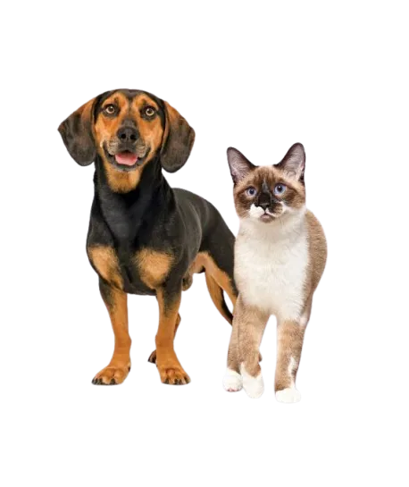

Produtos de qualidade
Selecionados com carinho
Agropecuária em Volta Redonda, RJ
Agropecuária Nossos Bichos em Volta Redonda
Da ração do mês ao mimo de última hora, a Agropecuária Nossos Bichos atende tutores de Volta Redonda e região com produtos para pets, acessórios e orientação próxima. Aqui a gente escuta, entende a rotina do animal e ajuda a escolher sem empurrar produto.
Atendimento sem pressa
Indicação no capricho

Cuidado de verdade
Atenção que faz diferença
Estamos em Volta Redonda
Atendimento local no RJ
Tutores recomendam
Confiança que se conquista
Produtos para pets em Volta Redonda
Rações, acessórios pet e itens agropecuários
Encontre produtos cadastrados pela loja e chame a Agropecuária Nossos Bichos no WhatsApp para confirmar disponibilidade, tirar dúvidas e comprar com atendimento local.
{% for produto in produtos %}
{% endfor %}
{% if produto.foto %}
) }}) {% else %}
{% endif %}
{% else %}
{% endif %}
Nenhum produto cadastrado ainda
Enquanto a vitrine online é atualizada, fale com a equipe da loja em Volta Redonda para consultar rações, acessórios pet, petiscos e itens de cuidado disponíveis.
Chamar no WhatsAppSobre a Agropecuária Nossos Bichos
A loja em Volta Redonda onde o tutor chega com dúvida e sai mais tranquilo.
A Agropecuária Nossos Bichos é uma agropecuária de Volta Redonda, RJ, para passar rapidinho e acabar conversando sobre o apetite, o banho, o petisco preferido e a fase do seu companheiro. Trabalhamos com variedade, cuidado na indicação e atendimento próximo para cães, gatos e seus tutores.
Ração certa para a rotina
Petiscos e mimos escolhidos com carinho
Orientação próxima, sem pressa
Localização
Venha visitar a Agropecuária Nossos Bichos em Volta Redonda
Passe aqui em Volta Redonda, RJ, quando faltar ração, quando bater dúvida ou quando seu pet merecer um agrado no caminho de casa.
Ver no mapaAvaliações de clientes
4,6
média dos clientes
80+ avaliações
★★★★★
Marizeth De Lima
"Atendimento excelente, preços bons."
★★★★★
Daisilaine Tolentino
"Atendimento muito bom, produtos de otima qualidade e um precinho q cabe no bolso."
★★★★★
wesley basthelly
"Levei meu cãozinho para o banho atendimento top loja linda. Variedade e preço top! simplesmente amei."
Fale com a Agropecuária Nossos Bichos
Chame no WhatsApp para tirar dúvidas, consultar produtos para pets em Volta Redonda ou pedir uma indicação com calma.
Fale com a gente